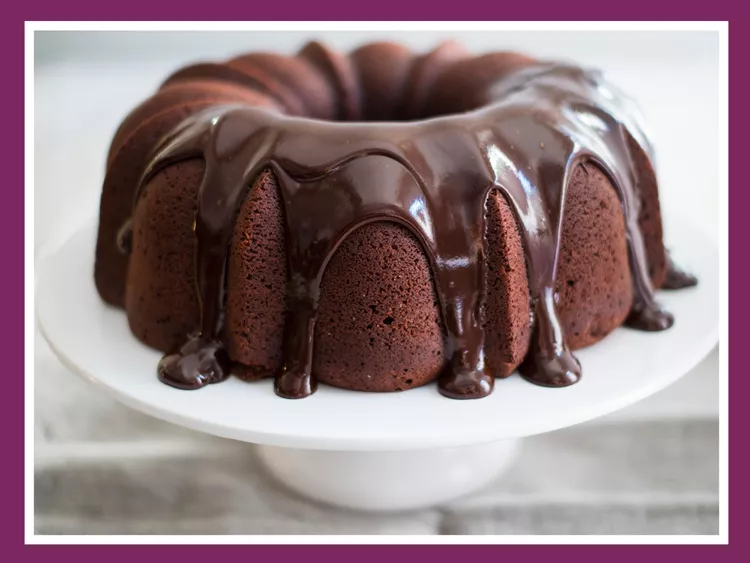

Tunnel of Fudge Cake

Ladies and gentlemen, this tunnel of fudge cake needs no introduction!
Ingredients
- 1 ½ cups milk
- 1 (3.5 ounce) package non-instant chocolate pudding mix
- 1 cup semisweet chocolate chips
- 1 ⅓ cups white sugar
- ¾ cup butter, softened
- ½ cup shortening
- 1 teaspoon vanilla extract
- 4 eggs
- 2 cups all-purpose flour
- 3/4 cup unsweetened cocoa powder, divided
- ½ teaspoon baking powder
- ½ teaspoon salt
- 1 cup milk
- 2 cups chopped walnuts
- ¾ cup confectioners' sugar
- 6 tablespoons milk, or as needed
Directions
- Make the filling: In a medium pan, combine 1 1/2 cups milk and pudding mix. Cook as directed on the package. Add chocolate chips and stir until melted. Set aside.
- Preheat the oven to 350 degrees F (175 degrees C). Grease and flour a 10-inch Bundt or tube pan.
- Make the cake batter: In a large bowl, combine white sugar, butter, and shortening. Beat until light and fluffy. Add vanilla and eggs. Mix well.
- Add flour, 1/2 cup cocoa, baking powder, salt, and 1 cup milk to a bowl. Beat on low speed until moistened. Beat on medium speed for 3 minutes, then stir in walnuts.
- Reserve 2 cups of the batter. Pour remaining batter into the prepared pan. Spoon the filling in a ring on top of the batter, making sure it does not touch the sides of the pan. Spoon reserved batter over the filling.
- Bake in the preheated oven until the cake springs back when touched lightly in the center, 50 to 60 minutes. Cool for 1 hour in the pan, then turn out onto a wire rack and cool completely.
- Make the glaze: In a small bowl, combine confectioners' sugar and remaining 1/4 cup cocoa. Stir in enough milk to reach desired drizzling consistency. Spoon glaze over the cooled cake, allowing some to run down the sides.